Wie löse ich Matheaufgaben?
Satz von Pythagoras, Höhensatz, Kathetensatz
Sie sehen ein gelbes Eingabefeld und die
Schalter: Prüfen und Lösung.
Tragen Sie Ihr Ergebnis ein, prüfen Sie es
oder starten Sie eine Lösung.
Aufgabe 1
Wie lang ist die Kathete a in cm, wenn die Kathete b = 7,8 cm und die Hypotenuse c = 9,8 cm lang sind?
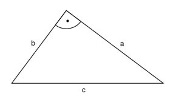
Aufgabe 2
Wie lang ist die Hypotenuse c in cm, wenn die
Katheten a = 7,3 cm und
b = 2,1 cm lang sind?
c =
Aufgabe 3
Eine Leiter ist 6 m lang und steht am Fußpunkt 1,3 m von einer Wand entfernt. In welcher Höhe in m berührt die Leiter die Wand?
Aufgabe 4
Eine Leiter ist 5 m lang. Sie ist genauso hoch wie die Wand, an der sie steht. Wie weit steht der Fußpunkt der Leiter in m von der Wand entfernt, wenn die Leiter die Wand oben 1 m unter der Oberkante berührt?
Er ist m entfernt.Aufgabe 5
Ein Rechteck ist 4 m lang und 2 m breit. Wie lang ist seine Diagonale d in m?
Aufgabe 6
Ein gleichseitiges Dreieck hat eine Seitenlänge s von 8 cm. Wie groß ist seine Höhe h in cm?
h = cmAufgabe 7
Berechnen Sie x in mm.
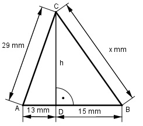
Aufgabe 8
Berechnen Sie h in mm.
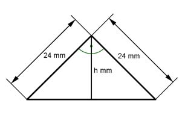
h = mmAufgabe 9
Berechnen Sie x in mm.
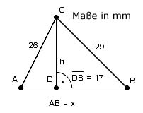
Aufgabe 10
Berechnen Sie x in mm.
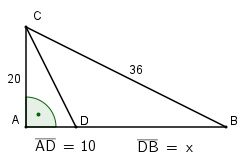
x = mmAufgabe 11
Ein Sendemast ist 323 m hoch. 27 m unterhalb der Spitze sind zwei Halteseile angebracht, die 215 m vom Mast entfernt verankert sind. Zwei weitere Halteseile sind in einer Höhe von 74 m befestigt und 130 m entfernt verankert. Berechnen Sie die Länge der beiden Halteseile in m.
Aufgabe 12
Bei einem Wettkampf wird ein Ball so geworfen, dass er 15 m neben der 55 m Marke auftrifft. Wie groß war die Wurfweite w in m tatsächlich?
w = mAufgabe 13
Bei einem Wettkampf springt ein Mädchen 0,52 m neben der Mitte des Weitsprungbalkens schräg ab. Es wird von der Mitte des Balkens aus eine senkrechte Weite von 4,48 m gemessen. Wie groß war die Sprungweite w des Mädchens in m tatsächlich?
Aufgabe 14
Ein Baum ist bei einem Sturm in 4 m Höhe abgeknickt. Seine Spitze liegt 15 m vom Stamm entfernt. Wie hoch war der Baum in m?
Er war m hoch.Aufgabe 15
Ein 25 m hoher Baum ist so abgeknickt, dass seine Spitze 5 m von seinem Fuß entfernt aufliegt. In welcher Höhe in m ist er abgeknickt?
Aufgabe 16
Berechnen Sie von der Hängebrücke die Längen x und y der beiden Spannseile in m.
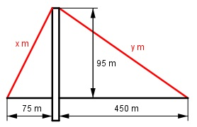
x = mAufgabe 17
Berechnen Sie von dem Klapptisch die Strebenlänge x in cm.
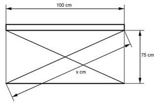
Aufgabe 18
Berechnen Sie die Höhe h in cm und die Fläche A des Dreiecks in cm2.
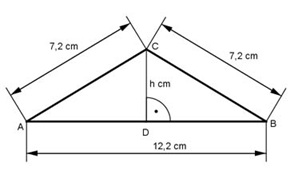
A = cm2Aufgabe 19
Berechnen Sie die Länge der Seite s des gleichschenkligen Trapezes in cm.
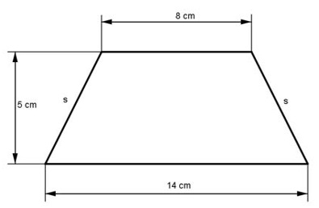
Aufgabe 20
a) Berechnen Sie die Fläche A des Dreiecks in m2.
b) Die Fläche wird gestrichen. Der Verbrauch an Farbe beträgt 1 l pro5 m2. Wie viel l Farbe sind nötig?
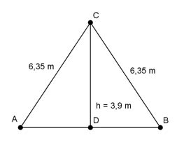
A = m2Aufgabe 21
Ein gleichseitiges Dreieck hat einen Umfang von 60 cm. Wie groß ist seine Fläche A in cm2?
Aufgabe 22
Eine Rutschbahn ist 1 240 m lang und überwindet einen Höhenunterschied von 220 m. Berechnen Sie die horizontale Entfernung s zwischen Start und Ziel und das Gefälle g in Prozent.
g = %Aufgabe 23
Berechnen Sie die Seite a und die Höhe h des Dachstuhls in m.
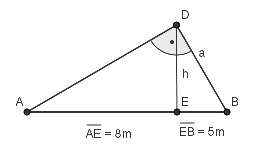
Aufgabe 24
Die Seite AD des rechtwinkligen Dreiecks soll so verlängert werden, dass sie Hypotenuse eines neuen rechtwinkligen Dreiecks wird. Wie lang ist diese Hypotenuse in cm?
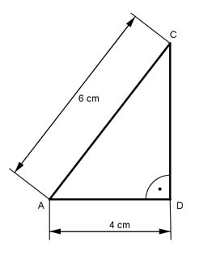
Es sind cm.Aufgabe 25
Berechnen Sie die Länge der Strecke AB in cm.
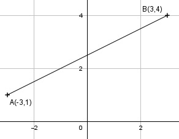
Aufgabe 26
Berechnen Sie die Fläche A des Dreiecks in cm2 und den Umfang U in cm.
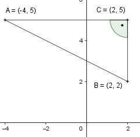
U = cmAufgabe 27
In einem rechtwinkligen Dreieck ist die Höhe das n-fache des Hypotenusenabschnitts q. Drücken Sie die Länge der Hypotenuse c durch n und q aus.
Aufgabe 28
Ein senkrecht an einer Wand stehender Stab rutscht 30 cm herunter. Dabei entfernt sich sein Fußpunkt einen halben Meter von der Wand.Wie lang ist der Stab in m?
Es sind mAufgabe 29
Die Dreiecke ABC und DAC sollen flächengleich
sein. Wie groß müssen a und b in cm sein, wenn
c = 5 cm ist und jedes Dreieck eine Fläche
A = 30 cm2 hat?
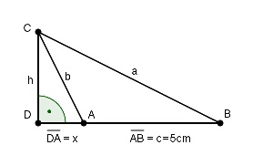
Aufgabe 30
Der Punkt B wurde von A und C aus über einen Fluss hinweg anvisiert. D liegt auf der Strecke AB. Berechnen Sie die Strecke AB in m.
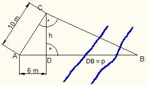
AB = mAufgabe 31
Eine Lampe hängt zwischen zwei 5 m hohen und 12 m voneinander entfernten Laternenmasten. Wie hoch in m darf ein darunter fahrendes Fahrzeug maximal sein, wenn die Lampe an einem 12,10 m langen Stahlseil befestigt ist?
Aufgabe 32
Berechnen Sie die Höhe h einer quadratischen (Seitenlänge 230 m) und gleichseitigen (Seitenlänge 219 m) Pyramide und die Höhe s einer Seitenfläche in m.
h = mAufgabe 33
Eine Klappleiter hat eine Länge von 3 m. Sie steht am Boden 1,2 m auseinander. Welche maximale Höhe h in m ist möglich?
Aufgabe 34
Eine Seilbahn führt von einem Berg (2 140 m) zu
einem anderen
(2 260 m).Die beiden Masten der
Seilbahn sind jeweils 10 m hoch. Sie sind auf
einer Karte mit dem Maßstab 1 : 10 000 5 cm
auseinander.Berechnen Sie die Länge l des
gespannten Seils in m, wenn es nicht durchhängt.
Aufgabe 35
Ein Fahrzeug fährt im Gebirge 6,2 km mit einer Steigung von 5 %. Berechnen Sie x und h in m.
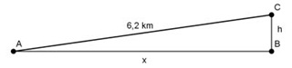
Aufgabe 36
Ein rechtwinkliges Dreieck hat eine Höhe von 3 cm
und eine Fläche von
12 cm2. Berechnen Sie die
Länge der Hypotenuse c und der Katheten a und b
in cm.
Aufgabe 37
Die Katheten eines rechtwinkligen Dreiecks stehen
im Verhältnis
a : b = 3 : 4. Wie lang sind die
Katheten in cm und die Fläche A in cm2, wenn die
Hypotenuse 8 cm lang ist?
Aufgabe 38
In welchem Verhältnis stehen die Katheten eines rechtwinkligen Dreiecks, das die gleiche Fläche wie ein gleichseitiges Dreieck hat, wenn seine Hypotenuse 8 cm und die Seite s des gleichseitigen Dreiecks 6 cm lang ist?
a : b = : 10Aufgabe 39
In einem rechtwinkligen Dreieck sind die Hypotenusenabschnitte p = 5 cm und q = 4 cm. Berechnen Sie die Länge der Katheten in cm und die Fläche A in cm2.
Aufgabe 40
In einem rechtwinkligen Dreieck sind die Kathete a = 6 cm und b = 8 cm lang. Berechnen Sie den Inkreisradius ri und den Umkreisradius ru in cm.
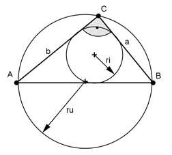
ru = cmAufgabe 41
In ein rechtwinkliges Dreieck ist ein Quadrat mit der Seite x einbeschrieben. Drücken Sie x durch die Katheten a und b aus.
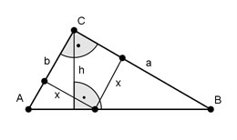
Aufgabe 42
In ein rechtwinkliges Dreieck ist ein Quadrat mit der Seite x einbeschrieben. Drücken Sie x durch die Hypotenusenabschnitte u und v aus.
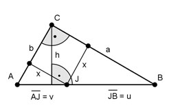
? =Aufgabe 43
Berechnen Sie die Diagonale d in einem gleichschenkligen Trapez in cm, wenn die parallelen Seiten 6,4 cm und 3,6 cm und die Höhe 2,5 cm betragen.
Aufgabe 44
Berechnen Sie die Fläche A eines gleichseitigen Dreiecks in cm2, wenn die Seite a = 5 cm.
A = cm2Aufgabe 45
Berechnen Sie die Fläche A eines gleichschenkligen Dreiecks in cm2, wenn die Grundseite c = 3,2 cm und ein Schenkel s = 4,8 cm.
Aufgabe 46
Berechnen Sie die Fläche A einer Raute in cm2,
wenn a = 3 cm und
e = 5 cm.
Aufgabe 47
Berechnen Sie die Fläche A eines regelmäßigen Sechsecks in cm2, wenn die Seite a = 6 cm.
Aufgabe 48
Berechnen Sie die Seite a eines gleichseitigen Dreiecks in cm,wenn seine Fläche A = 18 cm2 beträgt.
a = cmAufgabe 49
Berechnen Sie die Seite a eines regelmäßigen Sechsecks in cm, wenn seine Fläche A = 36 cm2 beträgt.
Aufgabe 50
Ein gleichschenkliges Dreieck hat einen Umfang U = 16 cm und eine Höhe h = 4 cm. Berechnen Sie die Länge der Seiten des Dreiecks in cm.
s = cmAufgabe 51
Berechnen Sie a in cm, wenn r = 3 cm und s = 4,8 cm.
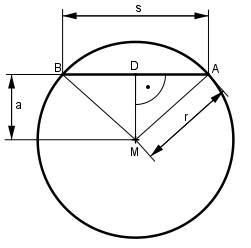
Aufgabe 52
Berechnen Sie s in cm, wenn r = 4 cm und a = 2 cm.
s = cmAufgabe 53
Berechnen Sie r in cm, wenn s = 6 cm und a = 2,5 cm.
Aufgabe 54
Einem Würfel mit der Seitenlänge a = 4 cm ist eine Pyramide aufgesetzt mit der Seitenlänge k = 3 cm.
a) Berechnen Sie die Höhe h der Pyramide in cm. h = cm b) Wie weit in cm ist die linke untere Ecke des Würfels von der Spitze der Pyramide entfernt?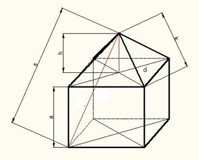
Aufgabe 55
Eine Pyramide hat als Grundfläche ein gleich-
seitiges Dreieck. Die Spitze der Pyramide liegt
über dem Schwerpunkt des gleichseitigen Dreiecks.
Berechnen Sie die Höhe h der Pyramide in cm, wenn
eine Grundseite
a = 9 cm und die Seitenlänge k
der Pyramide 14 cm ist.
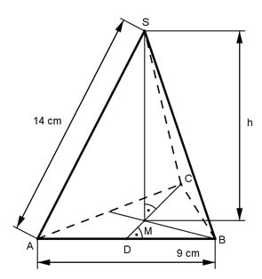
Aufgabe 56
Eine Pyramide hat als Grundfläche ein gleich- seitiges Dreieck. Die Spitze der Pyramide liegt über dem Schwerpunkt des gleichseitigen Dreiecks. Berechnen Sie die Höhe h eines Seitendreiecks in cm, wenn die Grundseitea = 10 cm und die Seiten- länge k der Pyramide 13 cm ist.
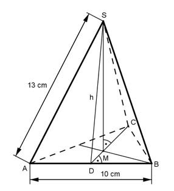
h = cmAufgabe 57
Ein Satteldach ist 9 m breit und 5 m hoch. Wie lang sind die Sparren in m, wenn sie an der Dachtraufe 30 cm überstehen?
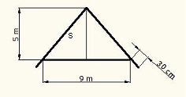
Aufgabe 58
Ein Satteldach ist 8 m breit und hat 6,20 m lange Sparren, die an der Dachtraufe 20 cm überstehen. Wie hoch ist das Dach in m?
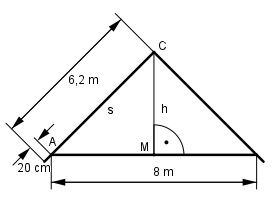
Es ist m hoch.Aufgabe 59
Berechnen Sie die Länge der Strecken x und y in m.
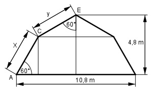
Aufgabe 60
Ein Beobachter sieht aus 150 m Entfernung und unter einem Erhebungswinkel von 30° den Lichtfleck, den ein senkrecht nach oben gerichteter Scheinwerfer an der Wolkenunter- grenze erzeugt. Wie hoch stehen die Wolken in m?
h = mAufgabe 61
Auf einer Karte, Maßstab 1 : 25 000, ist eine
Zahnradbahnstrecke 13,3 cm lang. Sie überwindet
auf dieser Strecke einen Höhenunterschied von
475 m. Berechnen Sie die Länge l der Bahnstrecke
in m.
Aufgabe 62
Einem gleichschenkligen, rechtwinkligen Dreieck ist ein gleichseitiges Dreieck einbeschrieben. Drücken Sie b durch a aus.
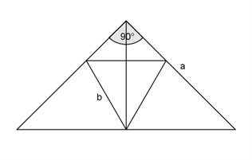
b = * aAufgabe 63
Einem gleichschenkligen, rechtwinkligen Dreieck ist ein gleichseitiges Dreieck einbeschrieben. Drücken sie b durch a aus.
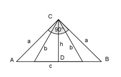
Aufgabe 64
Von einem rechtwinkligen Dreieck sind die
Hypotenusenabschnitte
q = 4 cm und p = 5 cm
bekannt. Berechnen Sie die Länge der Katheten
a und b in cm und die Fläche A in cm2.
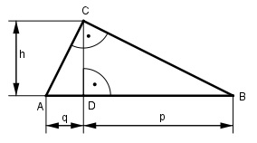
a = cmAufgabe 65
Von einem rechtwinkligen Dreieck sind die Höhe h = 5 cm und der Hypotenusenabschnitt q = 3 cm gegeben. Berechnen Sie die Länge der Seiten a, b und c in cm und die Fläche A in cm2.
Aufgabe 66
Berechnen Sie den Inkreisradius ri und den Ankreisradius ra eines rechtwinkligen Dreiecks in cm, wenn die Katheten a = 8 cm und b = 6 cm.
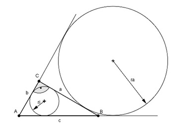
ri = cmAufgabe 67
Drücken Sie r2 durch r1 aus.
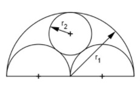
Aufgabe 68
Drücken Sie h1, h2 und r2 durch r1 aus.
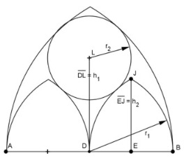
h2 = * r1Aufgabe 69
Drücken Sie r1, r3 und r4 durch r1 aus.
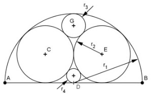
Aufgabe 70
Drücken Sie r2 und r3 durch r1 aus.
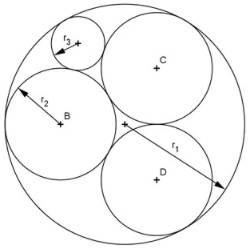
r2 = * r1Aufgabe 71
Berechnen Sie die Höhe h des dargestellten Gefäßes in dm und das Volumen in dm3, wenn g1 = 6 dm, g2 = 8 dm, a = 5 dm und b = 4 dm betragen.
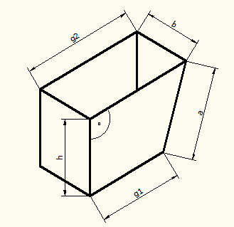
Aufgabe 72
Mit der dargestellten Lehre läßt sich überprüfen, ob ein Spiralbohrer richtig nachgeschliffen ist. Berechnen Sie die Höhe h in mm, wenn alle Maße in mm angegeben sind.
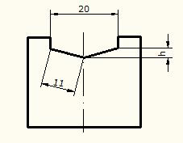
h = mmAufgabe 73
Ein Damm hat den dargestellten Querschnitt. Berechnen Sie die Länge l der Böschung in m.
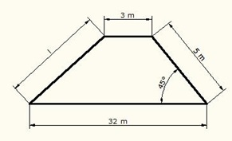
Aufgabe 74
Berechnen Sie die Fläche A des einbeschriebenen Quadrates in cm2.
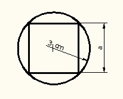
A = cm2Aufgabe 75
Das regelmäßige Sechseck hat eine Fläche von 120 cm2. Wie lang ist eine Seite s in cm?
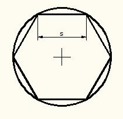
Aufgabe 76
Berechnen Sie die Länge der Seite s in cm.
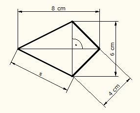
s = cmAufgabe 77
Berechnen Sie von dem gleichschenkligen Trapez den Umfang U in cm.
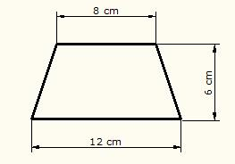
Aufgabe 78
Berechnen Sie die Länge der Raumdiagonalen d in cm.
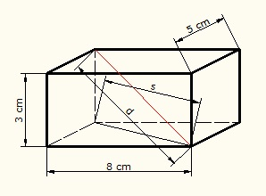
d = cmAufgabe 79
Wie tief dürfte das 2 m hohe und mit 25 cm Tiefe gelieferte Regal höchstens sein, wenn es wie skizziert durch die Tür passen soll?
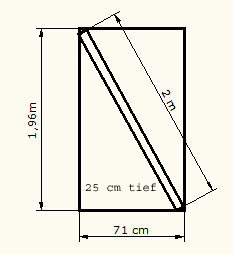
Aufgabe 80
Ein Fluss ist 180 m breit und hat eine Strömungsgeschwindigkeit
vF = 0,8 m/s.
Um ihn zu überqueren braucht ein Schwimmer
5 Minuten.
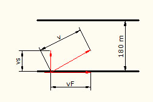
a) Es sind m.Aufgabe 81
Das Dreieck CDE hat eine Fläche von 2 cm2. Der Punkt E halbiert die Strecke AB. Die Strecke DE ist 1 cm lang. Berechnen sie die Längen der Hypotenuse c, der beiden Katheten und b und der Hypotenusenabschnitte q und p.
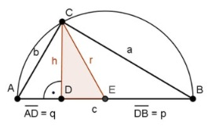
Aufgabe 82
Berechnen Sie den Umfang U des farbigen Dreiecks in cm.
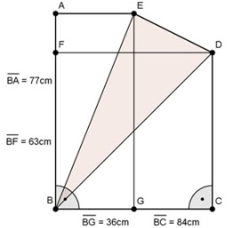
U = cmAufgabe 83
Berechnen Sie die Länge der Strecke x in mm. Alle Maße in mm.
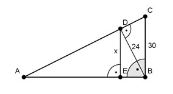
Aufgabe 84
Berechnen Sie die Größe der farbigen Fläche A in mm2.
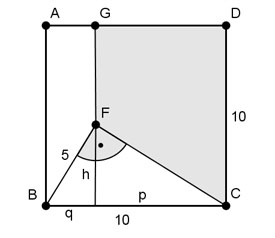
A = mm2Aufgabe 85
Berechnen Sie die farbige Trapezfläche A in mm2.
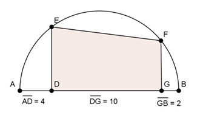
Aufgabe 86
Berechnen Sie die Größe der farbigen Fläche A in mm2.
A = mm2Aufgabe 87
Berechnen Sie die Länge der Strecke x in mm.
zurück